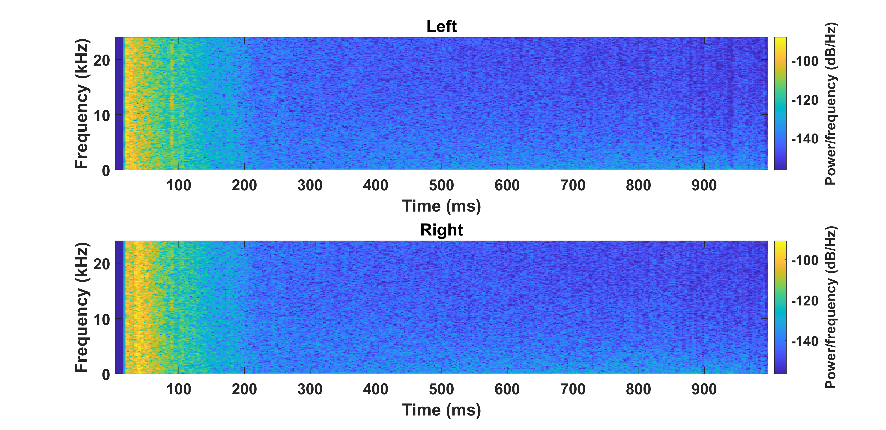
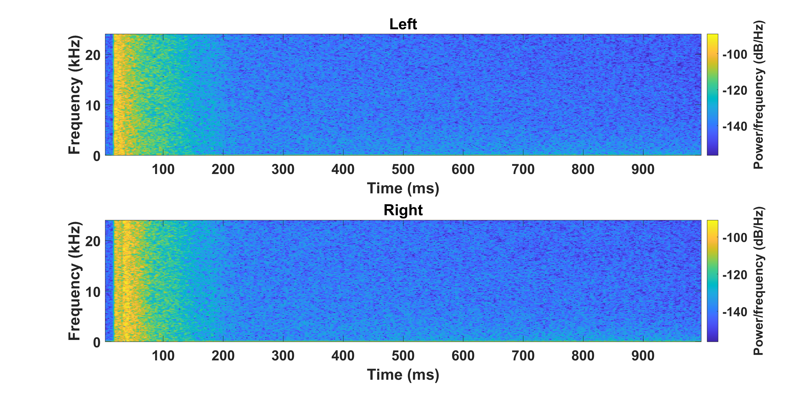
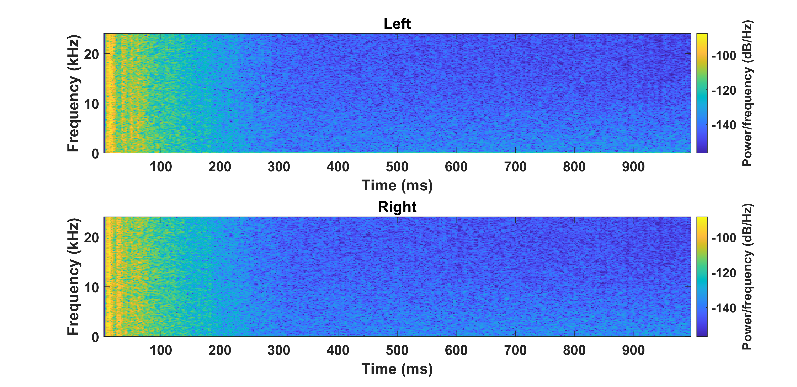
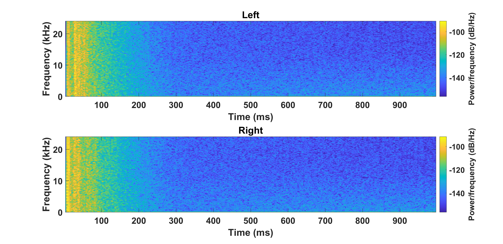
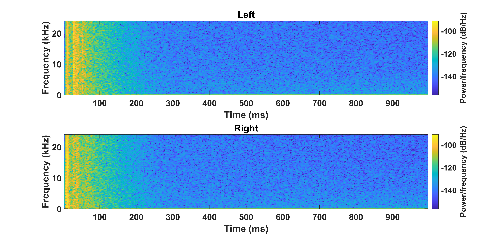
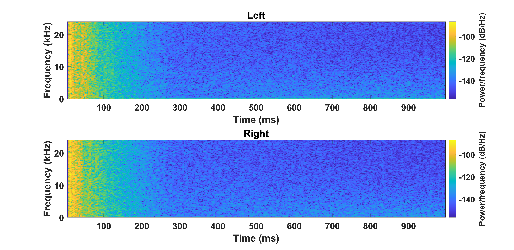

Abstract: We introduce M3-AUDIODEC, an innovative neural spatial audio codec designed for efficient compression of multi-channel (binaural) speech in both single and multi-speaker scenarios while retaining the spatial location information of each speaker. This model boasts versatility, allowing configuration and training tailored to a predetermined set of multi-channel, multi-speaker, and multi-spatial overlapping speech conditions.
Key contributions are as follows:
1) Previous neural codecs were extended from single to multi-channel audios.
2) The ability of our proposed model to compress and decode for overlapping speech.
3) A groundbreaking architecture that compresses speech content and spatial cues separately, ensuring the preservation of each speaker's spatial context after decoding.
4) M3-AUDIODEC's proficiency in reducing the bandwidth for compressing two-channel speech by 48% when compared to individual binaural channel compression. Impressively, at a 12.6 kbps operation, it outperforms Opus at 24 kbps and AudioDec at 24 kbps by 37% and 52%, respectively. In our assessment, we employed speech enhancement and room acoustic metrics to ascertain the accuracy of clean speech and spatial cue estimates from M3-AUDIODEC.
Baselines
Audio Demos - Single Speaker
Audio Codec
Compression
Bandwidth
Reverb Sample-1
Reverb Sample-2
Reverb Sample-3
Reverb Sample-4
Ground Truth
-
-
Opus-12
-
12 kbps
Opus-24
-
24 kbps
HiFi-Codec-320
320x
-
HiFi-Codec-240
240x
-
Encodec-12
256x
12 kbps
Encodec-48
64x
48 kbps
AudioDec
300x
24 kbps
M3-AUDIODEC (ours)
3150x
12.6 kbps
Audio Demos - Two Speakers
Audio Codec
Reverb Sample-1
Clean Speaker-1
Clean Speaker-2
Reverb Sample-2
Clean Speaker-1
Clean Speaker-2
Ground Truth
|
|
Opus-12
|
|
Encodec-12
|
|
M3-AUDIODEC (ours)
|
|
Audio Demos - Two Speakers (Training Samples)
Audio Codec
Training Reverb Sample-1
Clean Speaker-1
Clean Speaker-2
Training Reverb Sample-2
Clean Speaker-1
Clean Speaker-2
Ground Truth
|
|
M3-AUDIODEC (ours)
|
|
Ablation
Audio Demos - Single Speaker
Audio Codec
Clean-1
Reverb-1
Clean-2
Reverb-2
Clean-3
Reverb-3
Clean-4
Reverb-4
Ground Truth
M3-AUDIODEC-V1
M3-AUDIODEC-V2
M3-AUDIODEC (OURS)
Spetrogram Demos of M3-AUDIODEC - Single Speaker
Reverb Sample
Spetrogram of Ground truth BIR
Spetrogram of estimated BIR
Reverb Sample-1


Reverb Sample-2

Reverb Sample-3


Reverb Sample-4

Spetrogram Demos of M3-AUDIODEC (Reverb Sample-1) - Two Speaker